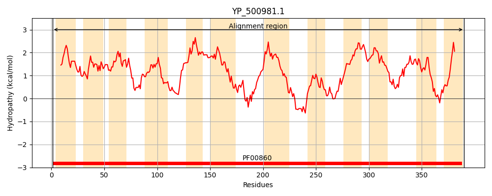
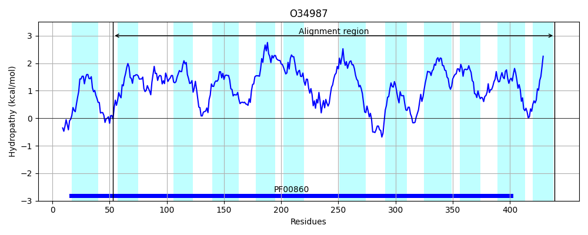
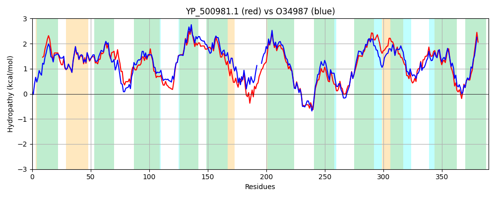

Hit Accession: O34987
Hit TCID: 2.A.40.7.2
Hit Description: gnl|BL_ORD_ID|7166 gnl|TC-DB|O34987|2.A.40.7.2 Hypoxanthine/guanine permease (Hypothetical protein) - Bacillus subtilis.
Mach Len: 390
e:0.000000
Query TMS Count : 12
Hit TMS Count: 12
TMS-Overlap Score: 10.050000
Predicted Substrates:CHEBI:5564;guanosine, CHEBI:5841;hypoxanthine
BLAST Alignment:
Score: 1326 , Bit scores: 515 bits, E-value: 0.0e+00, Alignment length: 390, Percentage identity: 66
Query: 1 MDQGAIFVATALAAFVGSLFMGLIAKYPIALAPGMGLNAFFAFTVVLTMGIPWQVGLTGVLFSGIFFAILTVTGFREVIINAIPYQMKMAVSAGIGLFITFVGLQSSGIIVKNESTLVTLGHLTDPPVLLAIFGIVITVILYAIKLPGSIFIGMIITAIVGMFTGLIQMPSGIVGKIPSIEPTFGAAFEAFKDPSQLLTIQFLIVILTFLFIDFFDTAGTLVAVATQAGIMKDNKLPRAGRALFSDSLATIVGSVFGTTTTTSYIESTSGVAVGARTGFASIVTGCCFLLALFFSPLIAVVTSAVTTPALVVVGVLMAANFAEINWKSFEVAVPAFITIIMMPLSYSIATGIACGFIFYPITMLISKKHKEVHPIMYVLMVLFILYFIFV 390
+DQGA+F ATALA+ G + MGLIA+YPIA+APGMGLNAFFAF+VVL MGI WQ L+GV SG+ F L++TGFRE IINAIP ++K+AV AGIGLFITFVGLQ SGII N STLVT+G++ PVLL IFG+++TVIL +++ +FIGM++TA+ GM GL+ +P+ I+G +PS+ PTFG A+ D + ++Q LIVILTFLF+ FFDTAGTLVAVATQAG+MK+NKLPRAGRAL +DS + ++G+V GT+TTTSY+ES+SGVA GAR+GFA+IVTG FLLA FFSPL++VVTS VT PAL++VG LM A +I W FEVAVPAF+T+IMMPL+YSIATGIA GFIFYPITM+ K KEVHPIMY L V+FILYFIF+
Sbjct: 53 IDQGAVFTATALASAAGCILMGLIARYPIAIAPGMGLNAFFAFSVVLGMGISWQAALSGVFISGLIFVALSLTGFREKIINAIPPELKLAVGAGIGLFITFVGLQGSGIITANPSTLVTIGNIHSGPVLLTIFGVIVTVILMVLRVNAGVFIGMLLTAVAGMIFGLVPVPTQIIGSVPSLAPTFGQAWIHLPD---IFSVQMLIVILTFLFVGFFDTAGTLVAVATQAGLMKENKLPRAGRALLADSSSIVIGAVLGTSTTTSYVESSSGVAAGARSGFAAIVTGILFLLATFFSPLLSVVTSNVTAPALIIVGALMVAPLGKIAWDKFEVAVPAFLTMIMMPLTYSIATGIAIGFIFYPITMVCKGKAKEVHPIMYGLFVVFILYFIFL 439 | Protein Hydropathy Plots: |
|---|
|  |  |
Pairwise Alignment-Hydropathy Plot:
|
|---|
|  |